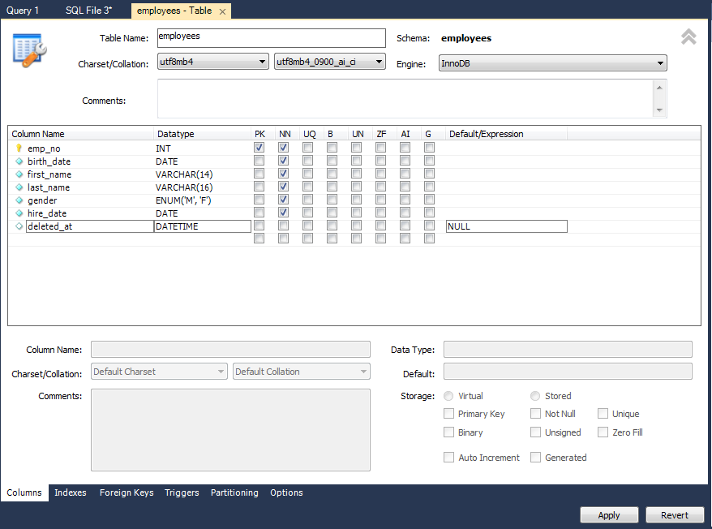

Вставка данных
Значение первичного ключа (PRIMARY KEY) должно быть уникальным (при вставке строки таблицы с существующим PRIMARY KEY появится ошибка)
Если PRIMARY KEY установлен автоинкремент (AI = Auto Incremental), то при вставке первичный ключ указывать не обязательно
INSERT INTO employees (emp_no, birth_date, first_name, last_name, gender, hire_date)
VALUES (500001, '1972-01-01', 'John', 'Doe', 'M', '2000-02-12');
Вставка сразу нескольких строк:
INSERT INTO employees (emp_no, birth_date, first_name, last_name, gender, hire_date)
VALUES
(500001, '1972-01-01', 'John', 'Doe', 'M', '2000-02-12'),
(500002, '1972-02-02', 'John', 'Doe', 'M', '2000-02-12'),
(500003, '1972-03-03', 'Jessica', 'Kelly', 'F', '2000-02-12'),
(500004, '1972-04-04', 'Grant', 'Portman', 'M', '2001-03-11');
Обновление данных
UPDATE employees SET hire_date = '2020-03-13' WHERE emp_no = 500001;
• SET - перечисление через запятую полей, которые хотим обновить
• WHERE - на каких конкретно записях нужно обновить. Неправильное условие или его отсутствие может нанести вред всей таблице
UPDATE users SET language = 'english,german' WHERE id = 0; // language - тип данных “перечисление SET”
Удаление данных
Стратегия Hard delete - жесткое удаление
DELETE FROM employees WHERE emp_no IN (500001, 500002, 500003, 500004);
• WHERE - условие, по которому удалять записи
• IN - удалятся перечисленные записи, у которых emp_no = 500001, emp_no = 500002, emp_no = 500003, emp_no = 500004
Удалить всю таблицу (2 варианта):
• DELETE FROM employees; // Запрос без условия
• TRUNCATE TABLE employees;
Стратегия Soft delete - данные не удаляются, а помечаются как удаленные
Для этого добавяем в таблицу еще одно поле: SCHEMAS / employees / Tables / employees / Пр.кн. / Alter Table / Добавляем столбец:

Для “удаления” обновляем запись:
UPDATE employees SET deleted_at = NOW() WHERE emp_no = 499999; // Теперь строка emp_no = 499999 как будто удалена
Вывод всех данных, которые “не удалены”:
SELECT * FROM employees WHERE deleted_at IS NULL ORDER BY emp_no DESC;
Записи, которые “удалены”:
SELECT * FROM employees WHERE deleted_at IS NOT NULL ORDER BY emp_no DESC;
Восстановить “удаленную” запись:
UPDATE employees SET deleted_at = NULL WHERE emp_no = 499999;